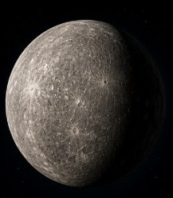
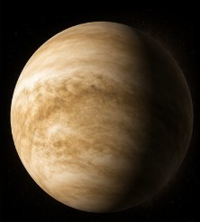
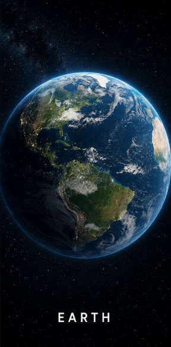
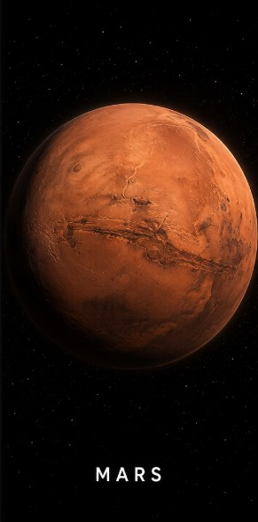
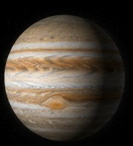
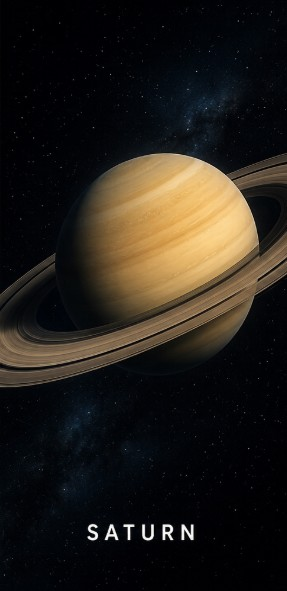
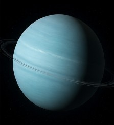
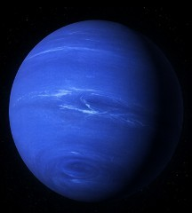

Discover planets, galaxies, and the mysteries beyond the stars.

The closest planet to the Sun with extreme temperatures.

The hottest planet with thick toxic clouds.

The only known planet supporting life.

The mysterious red planet of exploration.

The largest planet in the solar system.

Famous for its beautiful ring system.

The icy blue planet tilted sideways.

The farthest known planet with extreme winds.
GalaxyVerse is a modern interactive universe exploration platform designed to provide users with an immersive journey through the solar system.
Users can explore planets through interactive cards, detailed modal popups, tab systems, and accordion-based information sections.
Developed as a front-end interactive UI project using HTML, CSS, and JavaScript.